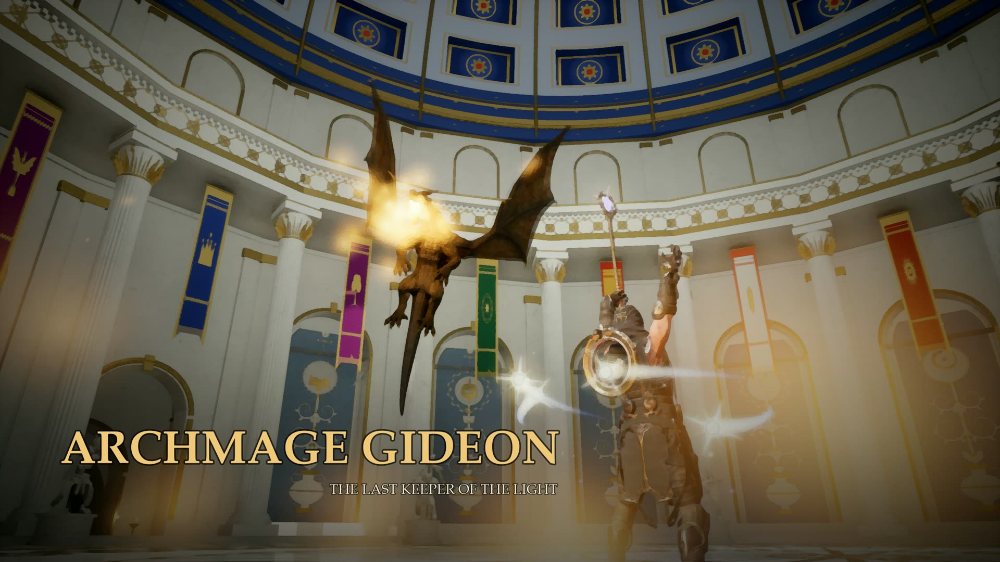
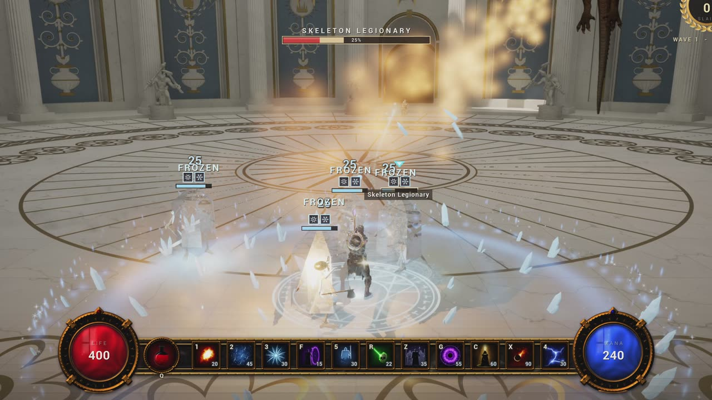
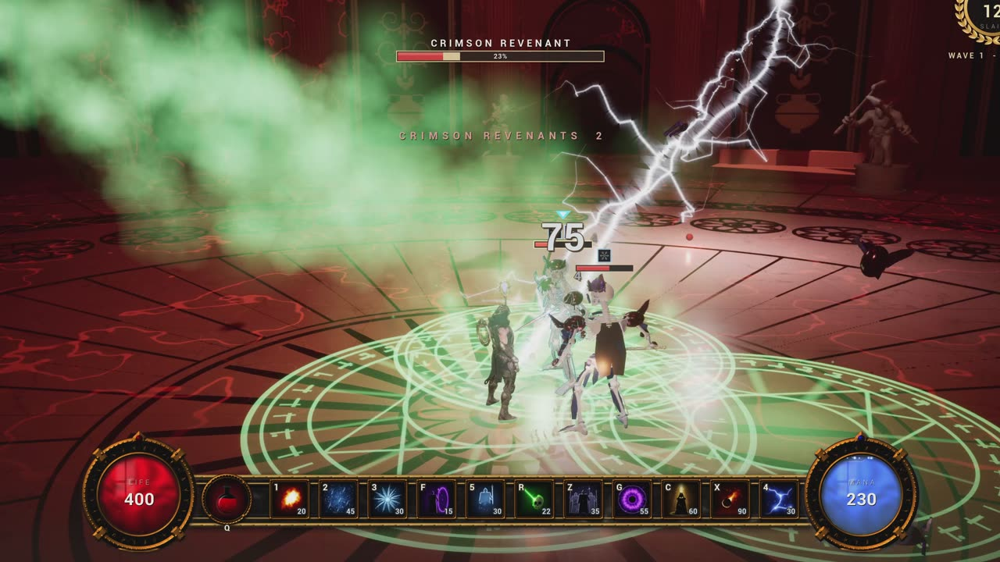
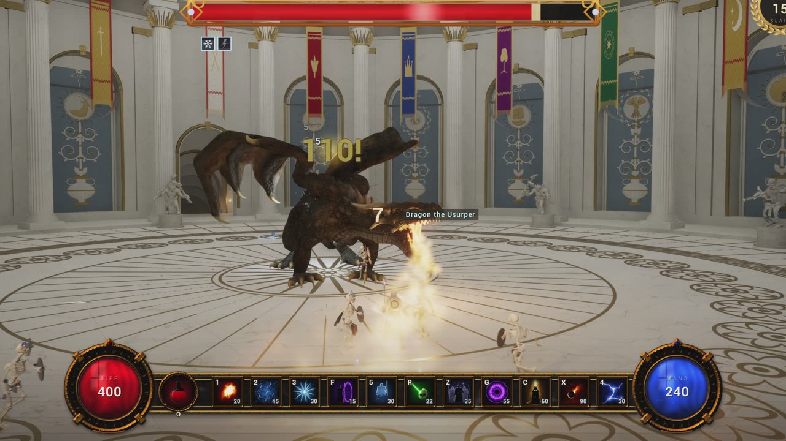
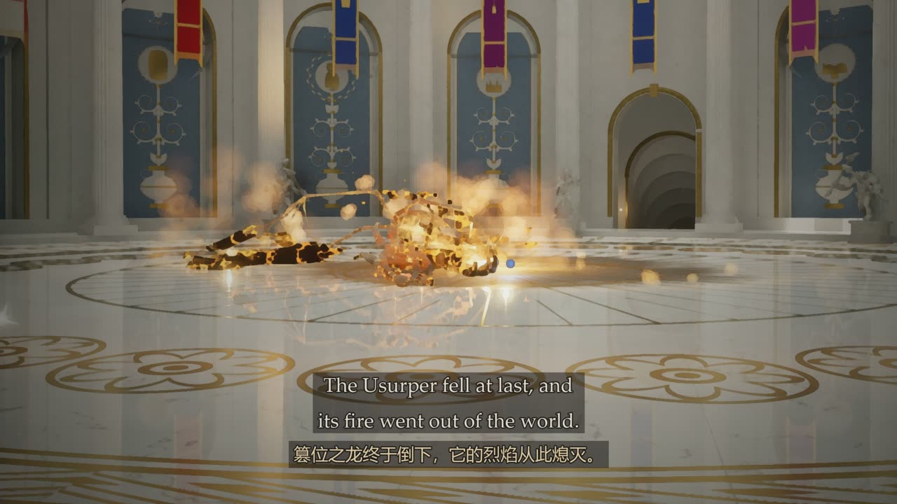

首席法师吉迪恩
Archmage Gideon
一位法师，十一道法术，独守天穹圣殿。亡灵破土而出，血月染红大殿，第 200 名亡灵倒下时，巨龙自穹顶降临。
One archmage and eleven spells hold the Celestial Sanctum against the risen dead, the Red Moon and a dragon.
Windows 10 / 11（64 位）· DirectX 12 · 8 GB 内存 · 716 MB



